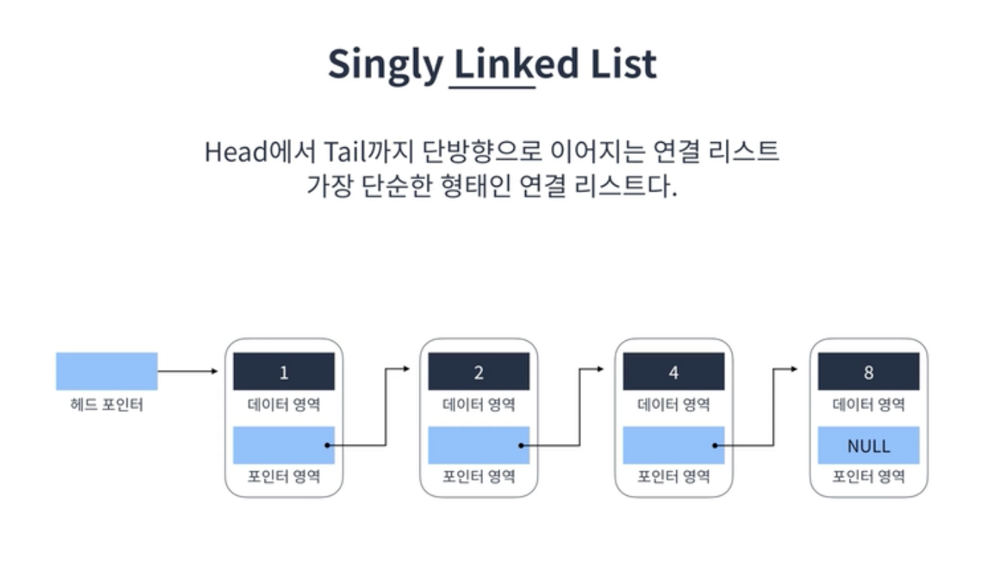
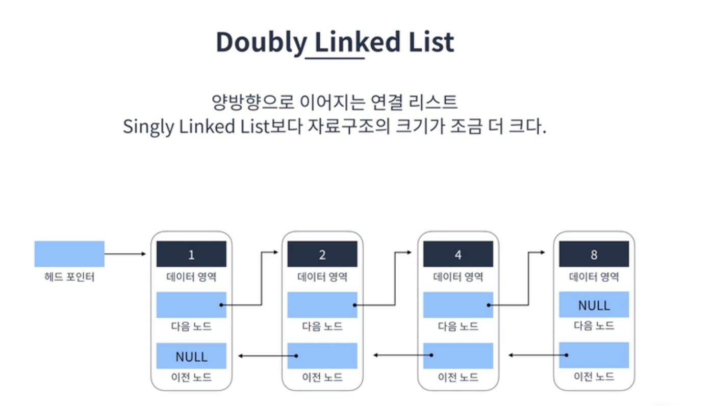
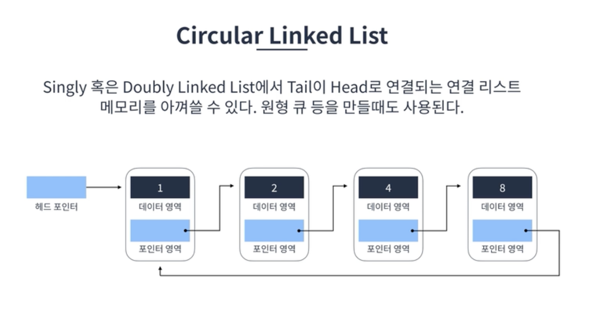
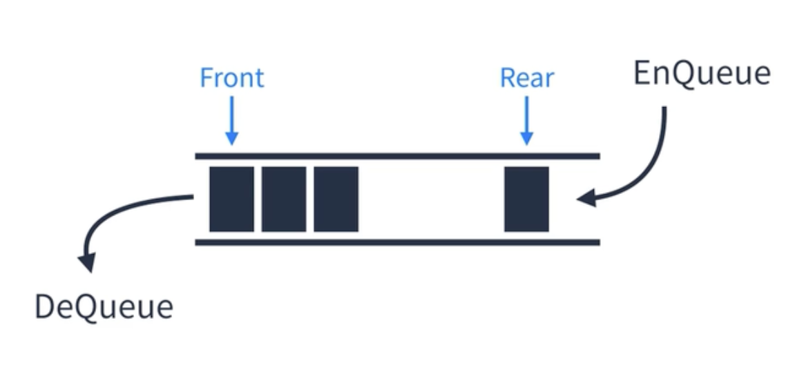
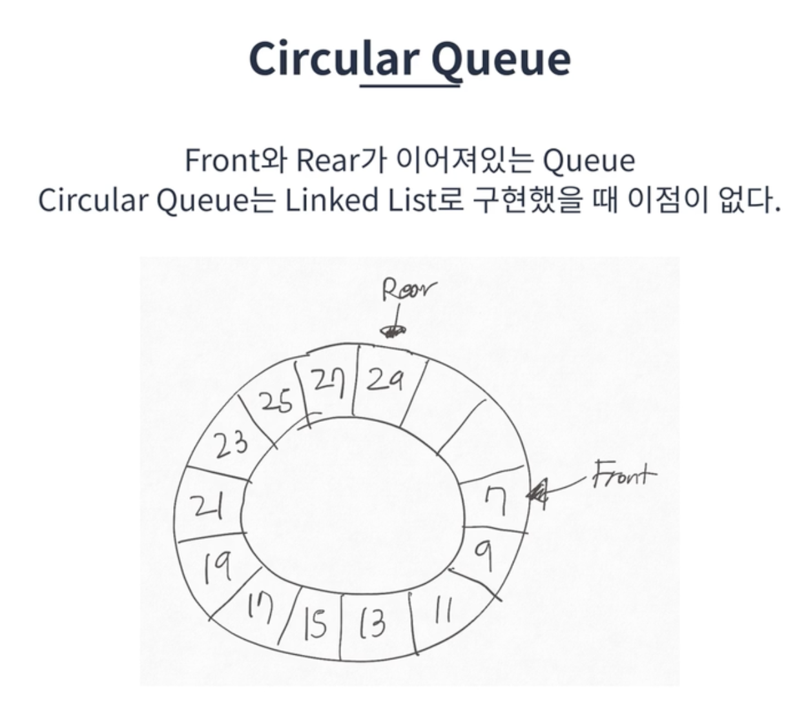

Written by
Jihyun Bang
on
on
[JS] 연결리스트 - 스택 & 큐
연결 리스트
각 요소를 포인터로 연결하여 관리하는 선형 자료구조이다. 각 요소는 노드라고 부르며 데이터 영역과 포인터 영역으로 구성된다
특징
- 메모리가 허용하는 한 요소를 제한없이 추가할 수 있다.
- 탐색은 O(n) (선형시간) 이 소요된다.
- 요소를 추가하거나 제거할 때는 O(1) (상수시간) 이 소요된다.
- Singly Linked List, Double Linked List, Circular Linked Lsit 가 존재한다
핵심로직
- 요소 찾기
- 요소 추가
- 요소 삭제
Singly Linked List (단일연결리스트)

Double Linked List (이중연결리스트)

Circular Linked List (환형연결리스트)

스택
Last In First Out 이라는 개념을 가진 선형자료구조다. 바닥이 막힌 상자를 생각하면 편하다
스택 표현방법
- 배열 (push, pop)
- 연결리스트
스택_올바른 괄호 실습
문제
괄호가 바르게 짝지어졌다는 것은 ‘(‘ 문자로 열렸으면 반드시 짝지어서 ‘)’ 문자로 닫혀야 한다는 뜻입니다. 예를 들어
- ”()()” 또는 “(())()” 는 올바른 괄호입니다.
- ”)()(“ 또는 “(()(“ 는 올바르지 않은 괄호입니다.
’(‘ 또는 ‘)’ 로만 이루어진 문자열 s가 주어졌을 때, 문자열 s가 올바른 괄호이면 true를 return 하고, 올바르지 않은 괄호이면 false를 return 하는 solution 함수를 완성해 주세요.
제한사항
- 문자열 s의 길이 : 100,000 이하의 자연수
- 문자열 s는 ‘(‘ 또는 ‘)’ 로만 이루어져 있습니다.
function solution(s) {
const stack = [];
for (const c of s) {
if (c === '(') {
stack.push(c);
} else {
if (stack.length === 0) {
return false;
}
stack.pop();
}
}
return stack.length === 0;
stack 에 값을 넣긴했지만 우리는 그 값을 꺼내서 쓰거나 하지는 않는다.
그래서 stack의 방식을 이용하지만 stack을 사용하지 않는 방법으로 조금 더 간단한 코드로 구현해보자
function solution(s) {
let count = 0;
for (const c of s) {
if (c === '(') {
count += 1
} else {
if (count === 0) {
return false;
}
count -= 1
}
}
return count === 0;
메모리를 조금 더 적게 사용하여 풀어보았다
큐
First In First Out 이라는 개념을 가진 선형 자료구조이다. Linear Queue (선형큐) 와 Circular Queue (환형큐) 가 존재한다.

Linear Queue (선형큐)
아래의 두가지 방식으로 구현할 수 있음
- Array(배열) 로 표현하기 ( 스택보다는 좀 어려움)
- Linked list(연결리스트) 로 표현하기
큐에서는 shift 함수는 쓰지말자! O(n) 선형시간이 소요되기때문
Circular Queue (환형큐)

한정된 공간을 효율적으로 사용할때 사용됨
→ 코딩테스트에는 구지 환영큐를 사용해야될 경우는 거의 없음